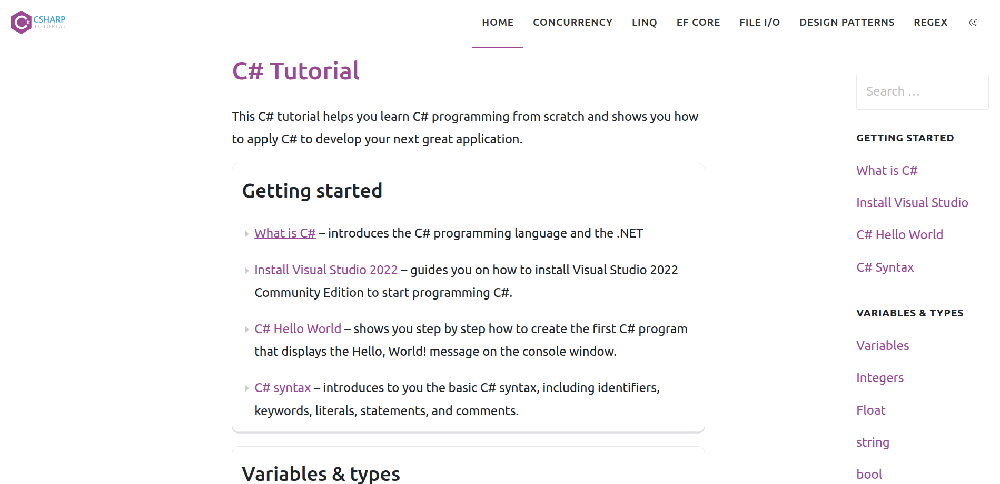

What is the URL of the website?
The url of the website I evaluated is: https://www.csharptutorial.net/
What is the name of the website
The name of the website is CSHARP TUTORIAL or C# Tutorial.
Who is the site's target audience?
The target audience is anyone who wants to learn the programming language C#.
How is the site organized?
The site uses Linear Organization.
Which CRAP Design Principle does the use? Provide at least one example.
In my opinion, the site makes good use of Proximity. Related items are grouped together. The grouping tells the reader how the site is organized, how it flows, and in what order to follow the tutorial.
What is the Audit Score according to the Accessibility Checker
Unfortuneately,the accessibility score is lower than desired at 83%.
What is the site's effectiveness? Does it support users in completing actions accurately?
The site is very effective. The main site action here is working one's way through the tutorial, in the right order. The site's design allows users to do so effectively.
What is the site's efficiency? Can users can perform tasks quickly?
The site is efficient. Reading the text, and following the tutorial is efficient.
How is the engagement? Is it pleasant to use and appropriate for its industry/topic?
The site is ok in regards to engagement. It is pleasant to use if you understand the site is a reference site. It is a bit dry, and does not have any community. There' is no login and no comments.
Make at least one recommendation to improve this website based on what you learned in this module.
Unfortunately, this site scored lower than it should in accessibility. My priority would be to fix the issues causing it to have a low score. In addition, I would prefer it to have some user interation. Comments at a minimum. Exercises would be nice. For bonus points, an online editor like W3 Schools would be ideal for my use case.
Screenshot of the website
